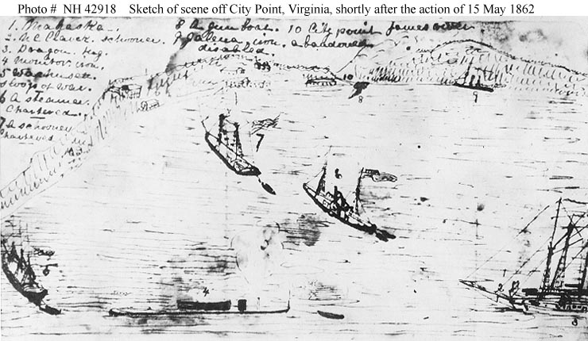

A working archive built ancestor by ancestor — tracing the Schmidt family across generations and across Europe, one translated record and one binder at a time. This page grows as the research does.
Family Tree
Family tree visualization
Drop in a GEDCOM-rendering embed here (e.g. an exported SVG from your genealogy software,
or a JS tree library such as family-chart or Topola) once your GEDCOM file is ready to publish.
Ancestor Records
001
Parents of 002
Otto & Henrietta Schmidt
The Parents We're Still Searching For
Otto: Professor of Languages, LondonHenrietta: d. 1842, Kensington
Otto Schmidt was a professor of languages, working and writing in London in the 1830s.
In August 1837 he married Henrietta Adonis Jourdan, a woman who had already lived a life of
her own on the continent before coming to England. Together they raised a young family in
the city — six children in all, baptized together at St. Pancras on a single day in August
1837, their birth entries all marked "Foreign Parts," a small clue to a family with roots
beyond England's shore.
The marriage didn't last in any simple sense. By 1841 Otto and Henrietta were living
apart, and the following year Henrietta died of consumption in Parsons Green at just around
30. Otto's story trails off from there. He surfaces once more — in 1856, listed as
"Professor" and, it seems, still living, on his daughter Adelaide's marriage certificate —
and then vanishes from the record entirely. Decades later, his son Edward would tell a U.S.
Navy surgeon that his father "died insane." Where, when, and how remain one of the great
open questions of this family's history.
002
Primary Subject — Military
Edward Alfred Henry Schmidt
b. 1833, Middlesex, Englandd. 1881, Kittery, MaineU.S. Navy, 1858–1864
Edward was eight years old when his mother died and his family began to scatter. By
sixteen he was lodging with a chemist in London; by the last days of November 1851, not yet
eighteen, he had crossed the Atlantic alone and made his way to New York. Within a year he
had settled in Kittery, Maine — the small shipbuilding town that would be his home for the
rest of his life.
In 1858 he enlisted in the U.S. Navy. His service took him aboard the USS Sabine, where
a ship's chain crushed his right hand off Pensacola and cost him a finger. He recovered,
came home, and married Mary Catherine Dudley in 1861. Within months he was back at sea
aboard the USS Mahaska, where an accidental discharge took a finger from his other hand.
His most striking documented mission came in 1864: a covert reconnaissance into North
Carolina's Dismal Swamp, scouting toward the Confederate ironclad CSS Albemarle. The
mission broke him — severe sunstroke brought on a mental collapse so serious he was
committed to Washington's Government Hospital for the Insane. He recovered enough to be
discharged, naturalized as a citizen, and granted a modest pension. He died in Kittery in
1881, at 47, and is buried at Orchard Grove Cemetery.
Naval Service
USS North Carolina — enlisted Sept. 28, 1858, as Landsman (under the name Edward H. Smith)
USS Southern Star — 1858–1859
USS Sabine — 1858–1861; discharged July 12, 1861, following a hand injury off Pensacola, Florida (Feb. 26, 1861)
USS Mahaska — April 5 – Dec. 6, 1862; 2nd Class Fireman, re-enlisted as Edward H. Schmidt
USS William G. Putnam ("General Putnam") — from Jan. 24, 1863; Acting Master's Mate
USS Commodore Hull — Albemarle Sound, N.C., 1864; hospital ticket issued Sept. 14, 1864 following his breakdown

Scene off City Point, James River, Virginia — shortly after the action of 15 May 1862.
Sketch, possibly by Edward H. Schmidt, a crewman aboard USS Mahaska — attribution not conclusively
confirmed. Received from Mrs. W.L. Smith of Savannah, Georgia, with her letter dated August 26, 1933.
U.S. Naval Historical Center Photograph, NHHC Photo #NH 42918.
The Action of 15 May 1862 — Battle of Drewry's Bluff
After the Confederates scuttled the ironclad CSS Virginia and abandoned Norfolk in early
May 1862, the James River lay open toward Richmond. On May 15, Commander John Rodgers led a
small Union flotilla — the ironclads USS Monitor and USS Galena, the experimental ironclad
USS Naugatuck, and gunboats USS Port Royal and USS Aroostook — up the river to test the
Confederate defenses just seven miles from the capital. The Confederates had fortified a
90-foot bluff at a sharp bend in the river, known as Fort Darling, and sunk obstructions in
the channel below it. Unable to pass, the Union ships anchored below the bluff and exchanged
fire with the fort for roughly four hours. USS Galena took the worst of it, struck more than
40 times with 13–14 killed, while Monitor's turret guns couldn't elevate enough to hit the
fort at such close range. Running low on ammunition, Rodgers withdrew the flotilla back
downriver to City Point around 11 a.m. — a Confederate victory that kept Richmond out of
reach by water for the rest of the war's early years.
The flotilla's retreat to City Point is exactly where this sketch is set. While USS
Mahaska wasn't one of the five ships in the battle itself, records place her at City Point
in the weeks afterward as part of the reinforcements sent to support the army — consistent
with Edward being aboard to sketch the gathered fleet, including a battle-damaged Galena.
003
Marriage of 002
Schmidt & Dudley Family — Edward A.H. & Mary Catherine
Married Aug. 28, 1861, York, MaineEight children
Edward Schmidt married Mary Catherine Dudley, a York, Maine, native, in August 1861 —
just weeks after his discharge from his first term of naval service and mere months before
he re-enlisted for the war. Mary would spend the next two decades raising a family largely
on her own while Edward served, recovered, and searched for steady footing.
The couple had at least eight children together: Adelaide Eleanor, Hallie G., Otto D.
(who died in infancy, named for the grandfather he never knew), Esther H., Lottie, James
W., Mary, and William Edward. Their daughter Jennie H. later married in Lynn,
Massachusetts, and Adelaide's own daughter carried the family's Revolutionary War lineage —
through the Dudleys and Bookers of York County — into the Daughters of the American
Revolution.
After Edward's death in 1881, Mary carried on, eventually remarrying as Mary C. Tucker.
She died around 1920 and was laid to rest beside Edward at Orchard Grove Cemetery,
Kittery.
Born in Kittery in 1871, William Edward was just ten years old when his father Edward
died. By 1898, in his late twenties, he had made his way to Massachusetts and enlisted —
three days after the U.S. declared war on Spain — as a private in Company D of the 8th
Massachusetts Volunteer Infantry, a regiment raised in Lynn, the same town where his sister
Jennie had settled.
His war was one of endurance rather than combat. The regiment trained through the misery
of Camp Thomas in Georgia — a sprawling, disease-ridden camp of 50,000 men — and then Camp
Lexington, Kentucky. The fighting ended before they ever saw action, but the regiment still
shipped out, landing in Cuba in January 1899 for roughly three months of occupation duty
before returning home to muster out in Boston that April — one year to the day after he'd
enlisted.
By 1900 he had moved on again, this time to Washington County, Kansas, where in 1903 he
married Margaret "Madge" Oswald. The couple raised their family there for over two decades
before relocating, sometime between 1925 and 1930, to San Diego County, California. William
Edward spent his later years working in bridge construction, and he died in Encinitas in
1959 at 87. He's buried at Fort Rosecrans National Cemetery, San Diego.
005
Marriage of 004
Schmidt & Oswald Family — William E. & Margaret "Madge"
Married Apr. 8, 1903, Washington, KansasSeven children
William Edward Schmidt and Margaret "Madge" Oswald married on April 8, 1903, in
Washington, Kansas. Madge was a local girl, born in 1883 in nearby Hanover to a father
named Oswald and a mother from the Lillibridge family — a line the family is still working
to trace further back.
Together they raised seven children on the Kansas plains: Lionel, Kenneth, Malcolm,
Rosella, Wilber, Mancil, and Donald. Tragedy touched the family more than once — their
eldest, Lionel, died in 1904 at not quite eleven years old, and decades later, after the
family had resettled in California, their son Mancil died in Encinitas in 1932 at just
eighteen.
The family's move west, sometime between 1925 and 1930, took them from the Kansas
prairie to the growing communities of Oceanside and then Encinitas on the California coast,
where William Edward and Madge would spend the rest of their lives. Madge died in December
1956; William Edward followed in March 1959. They're buried together at Fort Rosecrans
National Cemetery, San Diego.
Research Log
—
Notes from the trail
Ongoing
Use this space like a lab notebook: which record was translated this month, which
archive was queried, which branch is still a dead end. It turns the site into a living
research log rather than a static family tree.